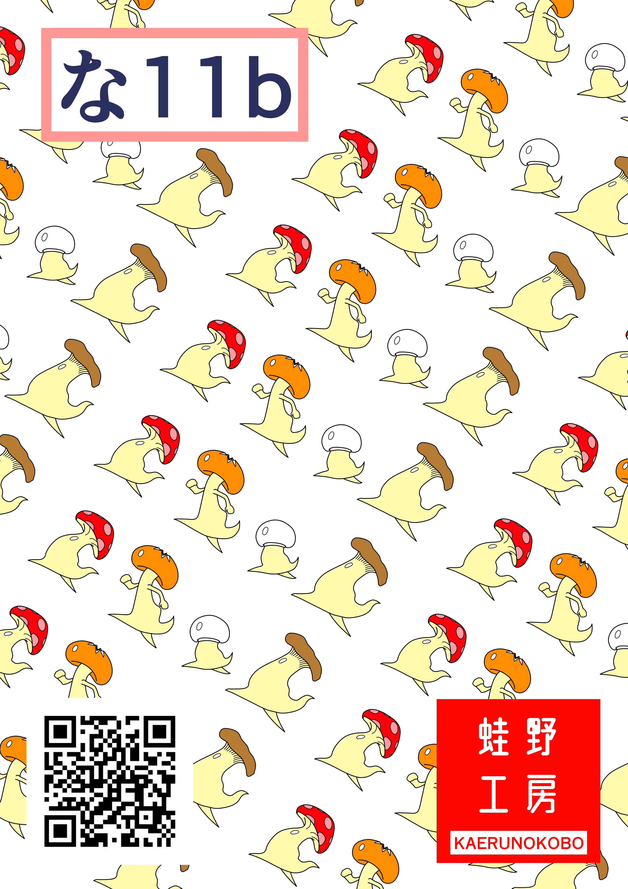

- 制作日付：
- サイズ：
- 297 × 420（mm）

- 概要
- 参加した Comitia130 でサークルを宣伝するために制作しました。設営場所やサークル名、売られているキャラクターを載せて、SNSで見た人たちに気づいてもらえるようなポスターを目指しました。
- ターゲット
- SNSで自分たちのことに興味を持って、当日になりブースの設営場所を探している人々
- 目的
-
これを見た人の印象に残ること。
サークルの設営場所に来ること。 - 設置場所
- 設営ブース内と会場内
- 情報設計
- サークルポスターは販売している冊子を宣伝するためのものが多く、冊子の表紙やタイトルが大きく印字されているものが多くあります。しかし、自分たちは冊子を販売しておらず、トートバッグとTシャツのみの販売だったので載せられる情報がありませんでした。そこで紙面情報はサークル団体のロゴと設営場所、作者のSNSリンクに絞り、SNSで見覚えがあると思った人に刺さるようにしました。
- デザイン
- このポスターはサークル設営場所が一番目立ち、どの団体がやっているのかがわかるようなものにしました。紙面の左上に設営場所を印字し、その対角線にサークルロゴを設置。背景は今回のイベントで販売しているＴシャツとトートバッグに使ったデザインをパターンで配置しました。扱っている商品の画像がないので、ブースで何を販売しているかがわかりませんが、イベント自体が歩き回っていろいろなものを見るようなものなので初見の人に「なんか気になるからあとでブースに行ってみよう」と思われるようなデザインを心掛けました。
- 担当範囲
-
- デザイン
- 制作期間
- デザイン：3日
- 使用ツール
-
- Clip Studio Paint